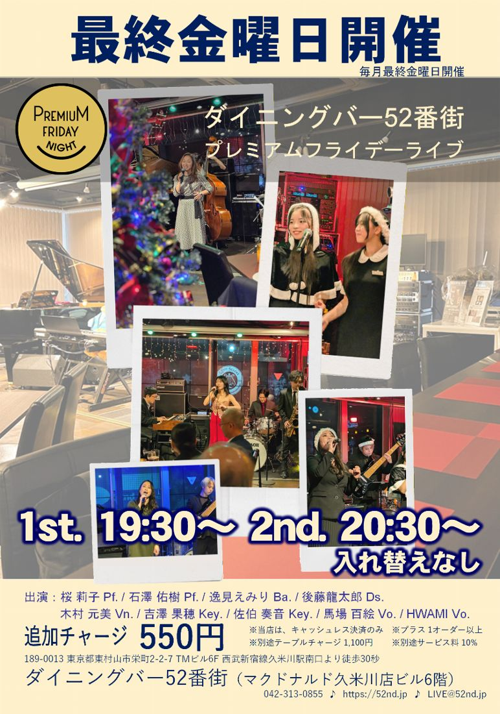

11.15SUN

当店主催
小林陽一 モンクストリオ feat.太田寛二
バップピアノの第一人者・太田寛二をフィーチャーし、古き良きアメリカのジャズスタンダードを北峯ムツミのヴォーカルで。
開場 17:00／1st 18:00／2nd 20:20（入替なし）

Jazz Live Schedule
ジャズのトリオ公演から、スタッフによるミニライブ、70〜80年代のDisco Nightまで。特に記載がなければ、どなたでもご入場いただけます。
バップピアノの第一人者・太田寛二をフィーチャーし、古き良きアメリカのジャズスタンダードを北峯ムツミのヴォーカルで。
開場 17:00／1st 18:00／2nd 20:20（入替なし）

当店スタッフによるミニライブ。ジャズスタンダードからシティーポップまで、往年の名曲をジャズアレンジで。ジャズ初心者・非会員の方も。
開場 19:00／1st 19:30／2nd 20:30
ミュージックチャージ 1,100円
チケット購入
会員以外の方も予約不要。踊りやすい服装でどうぞ（ミュージックチャージ・サービス料無料）。
18:00〜22:00（L.O. 21:45）

満員御礼の7月公演に続き再登場。ブルースフィーリングたっぷりのソウルフルなジャズを。
開場 18:00／1st 19:00／2nd 20:20
該当する公演はありません。
For Musicians
52番街で、あなたのライブを。